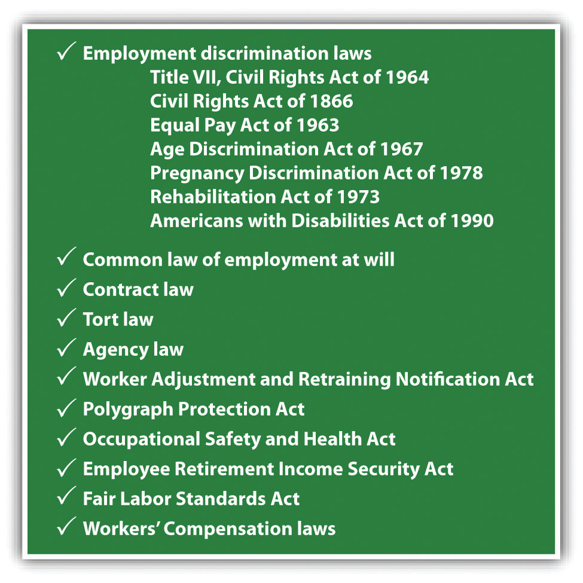

After reading this chapter, you should understand the following:
In the next chapter, we will examine the laws that govern the relationship between the employer and the employee who belongs, or wants to belong, to a union. Although federal labor law is confined to that relationship, laws dealing with the employment relationship—both state and federal—are far broader than that. Because most employees do not belong to unions, a host of laws dealing with the many faces of discrimination shapes employers’ power over and duties to their employees. Beyond the issue of discrimination, the law also governs a number of other issues, such as the extent to which an employer may terminate the relationship itself. We examine these issues later in this chapter.
Even before statutes governing collective bargaining and various state and federal discrimination laws, the common law set the boundaries for employer-employee relationships. The basic rule that evolved prior to the twentieth century was “employment at will.” We will look at employment at will toward the end of this chapter. But as we go through the key statutes on employment law and employment discrimination, bear in mind that these statutes stand as an important set of exceptions to the basic common-law rule of employment at willThe common-law doctrine that allows employers to discharge an employee at any time and for any reason or for no reason. Courts have created exceptions for “bad reasons.”. That rule holds that in the absence of a contractual agreement otherwise, an employee is free to leave employment at any time and for any reason; similarly, an employer is free to fire employees at any time and for any reason.
As we look at federal employment discriminationTreating employees or job applicants unequally on the basis of race, color, national origin, religion, sex (gender), age, or disability; prohibited by federal statutes and many state statutes. laws, bear in mind that most states also have laws that prohibit various kinds of discriminatory practices in employment. Until the 1960s, Congress had intruded but little in the affairs of employers except in union relationships. A company could refuse to hire members of racial minorities, exclude women from promotions, or pay men more than women for the same work. But with the rise of the civil rights movement in the early 1960s, Congress (and many states) began to legislate away the employer’s frequently exercised power to discriminate. The most important statutes are Title VII of the Civil Rights Act of 1964, the Equal Pay Act of 1963, the Age Discrimination in Employment Act of 1967, and the Americans with Disabilities Act of 1990.
The most basic antidiscrimination law in employment is in Title VII of the federal Civil Rights Act of 1964. The key prohibited discrimination is that based on race, but Congress also included sex, religion, national origin, and color as prohibited bases for hiring, promotion, layoff, and discharge decisions. To put the Civil Rights Act in its proper context, a short history of racial discrimination in the United States follows.
The passage of the Civil Rights Act of 1964 was the culmination of a long history that dated back to slavery, the founding of the US legal system, the Civil War, and many historical and political developments over the ninety-nine years from the end of the Civil War to the passage of the act. The years prior to 1964 had seen a remarkable rise of civil disobedience, led by many in the civil rights movement but most prominently by Dr. Martin Luther King Jr. Peaceful civil disobedience was sometimes met with violence, and television cameras were there to record most of it.
While the Civil War had addressed slavery and the secession of Southern states, the Thirteenth, Fourteenth, and Fifteenth Amendments, ratified just after the war, provided for equal protection under the law, guaranteed citizenship, and protected the right to vote for African Americans. The amendments also allowed Congress to enforce these provisions by enacting appropriate, specific legislation.
But during the Reconstruction Era, many of the Southern states resisted the laws that were passed in Washington, DC, to bolster civil rights. To a significant extent, decisions rendered by the US Supreme Court in this era—such as Plessy v. Ferguson, condoning “separate but equal” facilities for different races—restricted the utility of these new federal laws. The states effectively controlled the public treatment of African Americans, and a period of neglect set in that lasted until after World War II. The state laws essentially mandated segregated facilities (restaurants, hotels, schools, water fountains, public bathrooms) that were usually inferior for blacks.
Along with these Jim Crow laws in the South, the Ku Klux Klan was very strong, and lynchings (hangings without any sort of public due process) by the Klan and others were designed to limit the civil and economic rights of the former slaves. The hatred of blacks from that era by many whites in America has only gradually softened since 1964. Even as the civil rights bill was being debated in Congress in 1964, some Young Americans for Freedom in the right wing of the GOP would clandestinely chant “Be a man, join the Klan” and sing “We will hang Earl Warren from a sour apple tree,” to the tune of “Battle Hymn of the Republic,” in anger over the Chief Justice’s presiding over Brown v. Board of Education, which reversed Plessy v. Ferguson.
But just a few years earlier, the public service and heroism of many black military units and individuals in World War II had created a perceptual shift in US society; men of many races who had served together in the war against the Axis powers (fascism in Europe and the Japanese emperor’s rule in the Pacific) began to understand their common humanity. Major migrations of blacks from the South to industrial cities of the North also gave impetus to the civil rights movement.
Bills introduced in Congress regarding employment policy brought the issue of civil rights to the attention of representatives and senators. In 1945, 1947, and 1949, the House of Representatives voted to abolish the poll tax. The poll tax was a method used in many states to confine voting rights to those who could pay a tax, and often, blacks could not. The Senate did not go along, but these bills signaled a growing interest in protecting civil rights through federal action. The executive branch of government, by presidential order, likewise became active by ending discrimination in the nation’s military forces and in federal employment and work done under government contract.
The Supreme Court gave impetus to the civil rights movement in its reversal of the “separate but equal” doctrine in the Brown v. Board of Education decision. In its 1954 decision, the Court said, “To separate black children from others of similar age and qualifications solely because of their race generates a feeling of inferiority as to their status in the community that may affect their hearts and minds in a way never to be undone.…We conclude that in the field of public education the doctrine of separate but equal has no place. Separate educational facilities are inherently unequal.”
This decision meant that white and black children could not be forced to attend separate public schools. By itself, however, this decision did not create immediate gains, either in public school desegregation or in the desegregation of other public facilities. There were memorable standoffs between federal agents and state officials in Little Rock, Arkansas, for example; the Democratic governor of Arkansas personally blocked young black students from entering Little Rock’s Central High School, and it was only President Eisenhower’s order to have federal marshals accompany the students that forced integration. The year was 1957.
But resistance to public school integration was widespread, and other public facilities were not governed by the Brown ruling. Restaurants, hotels, and other public facilities were still largely segregated. Segregation kept blacks from using public city buses, park facilities, and restrooms on an equal basis with whites. Along with inferior schools, workplace practices throughout the South and also in many Northern cities sharply limited African Americans’ ability to advance economically. Civil disobedience began to grow.
The bus protests in Montgomery, Alabama, were particularly effective. Planned by civil rights leaders, Rosa Parks’s refusal to give up her seat to a white person and sit at the back of the public bus led to a boycott of the Montgomery bus system by blacks and, later, a boycott of white businesses in Montgomery. There were months of confrontation and some violence; finally, the city agreed to end its long-standing rules on segregated seating on buses.
There were also protests at lunch counters and other protests on public buses, where groups of Northern protesters—Freedom Riders—sometimes met with violence. In 1962, James Meredith’s attempt to enroll as the first African American at the University of Mississippi generated extreme hostility; two people were killed and 375 were injured as the state resisted Meredith’s admission. The murders of civil rights workers Medgar Evers and William L. Moore added to the inflamed sentiments, and whites in Birmingham, Alabama, killed four young black girls who were attending Sunday school when their church was bombed.
These events were all covered by the nation’s news media, whose photos showed beatings of protesters and the use of fire hoses on peaceful protesters. Social tensions were reaching a postwar high by 1964. According to the government, there were nearly one thousand civil rights demonstrations in 209 cities in a three-month period beginning May 1963. Representatives and senators could not ignore the impact of social protest. But the complicated political history of the Civil Rights Act of 1964 also tells us that the legislative result was anything but a foregone conclusion.See CongressLink, “Major Features of the Civil Rights Act of 1964,” at http://www.congresslink.org/print_basics_histmats_civilrights64text.htm.
In Title VII of the Civil Rights Act of 1964, Congress for the first time outlawed discrimination in employment based on race, religion, sex, or national origin:. Title VII declares: “It shall be an unlawful employment practice for an employer to fail or refuse to hire or to discharge any individual, or otherwise to discriminate against any individual with respect to his compensation, terms, conditions, or privileges of employment, because of such individual’s race, color, religion, sex, or national origin.” Title VII applies to (1) employers with fifteen or more employees whose business affects interstate commerce, (2) all employment agencies, (3) labor unions with fifteen or more members, (4) state and local governments and their agencies, and (5) most federal government employment.
In 1984, the Supreme Court said that Title VII applies to partnerships as well as corporations when ruling that it is illegal to discriminatorily refuse to promote a female lawyer to partnership status in a law firm. This applies, by implication, to other fields, such as accounting.Hishon v. King & Spalding, 467 U.S. 69 (1984). The remedy for unlawful discrimination is back pay and hiring, reinstatement, or promotion.
Title VII established the Equal Employment Opportunity Commission (EEOC) to investigate violations of the act. A victim of discrimination who wishes to file suit must first file a complaint with the EEOC to permit that agency to attempt conciliation of the dispute. The EEOC has filed a number of lawsuits to prove statistically that a company has systematically discriminated on one of the forbidden bases. The EEOC has received perennial criticism for its extreme slowness in filing suits and for failure to handle the huge backlog of complaints with which it has had to wrestle.
The courts have come to recognize two major types of Title VII cases:
Cases of disparate treatmentA form of employment discrimination that results when an employer intentionally discriminates against employees who are members of protected classes.
Cases of disparate impactA form of employment discrimination resulting from employer practices that appear to be neutral but that have a discriminatory impact on protected classes.
Figure 30.1 A Checklist of Employment Law
An employer who systematically refuses to hire Catholics, Jews, Buddhists, or members of any other religious group engages in unlawful disparate treatment under Title VII. But refusal to deal with someone because of his or her religion is not the only type of violation under the law. Title VII defines religion as including religious observances and practices as well as belief and requires the employer to “reasonably accommodate to an employee’s or prospective employee’s religious observance or practice” unless the employer can demonstrate that a reasonable accommodation would work an “undue hardship on the conduct of the employer’s business.” Thus a company that refused even to consider permitting a devout Sikh to wear his religiously prescribed turban on the job would violate Title VII.
But the company need not make an accommodation that would impose more than a minimal cost. For example, an employee in an airline maintenance department, open twenty-four hours a day, wished to avoid working on his Sabbath. The employee belonged to a union, and under the collective bargaining agreement, a rotation system determined by seniority would have put the worker into a work shift that fell on his Sabbath. The Supreme Court held that the employer was not required to pay premium wages to someone whom the seniority system would not require to work on that day and could discharge the employee if he refused the assignment.Trans World Airlines v. Hardison, 432 U.S. 63 (1977).
Title VII permits religious organizations to give preference in employment to individuals of the same religion. Obviously, a synagogue looking for a spiritual leader would hire a rabbi and not a priest.
A refusal to hire or promote a woman simply because she is female is a clear violation of Title VII. Under the Pregnancy Act of 1978, Congress declared that discrimination because of pregnancy is a form of sex discrimination. Equal pay for equal or comparable work has also been an issue in sex (or gender) discrimination. Barbano v. Madison County (see Section 30.4.1 "Disparate Treatment: Burdens of Proof"), presents a straightforward case of sex discrimination. In that case, notice how the plaintiff has the initial burden of proving discriminatory intent and how the burden then shifts to the defendant to show a plausible, nondiscriminatory reason for its hiring decision.
The late 1970s brought another problem of sex discrimination to the fore: sexual harassmentDemands for sexual favors in return for job promotions or other benefits, or language or conduct so sexually offensive that it creates a hostile work environment, disadvantaging the employee on the basis of sex.. There is much fear and ignorance about sexual harassment among both employers and employees. Many men think they cannot compliment a woman on her appearance without risking at least a warning by the human resources department. Many employers have spent significant time and money trying to train employees about sexual harassment, so as to avoid lawsuits. Put simply, sexual harassment involves unwelcome sexual advances, requests for sexual favors, and other verbal or physical conduct of a sexual nature.
There are two major categories of sexual harassment: (1) quid pro quo and (2) hostile work environment.
Quid pro quo comes from the Latin phrase “one thing in return for another.” If any part of a job is made conditional on sexual activity, there is quid pro quo sexual harassment. Here, one person’s power over another is essential; a coworker, for example, is not usually in a position to make sexual demands on someone at his same level, unless he has special influence with a supervisor who has power to hire, fire, promote, or change work assignments. A supervisor, on the other hand, typically has those powers or the power to influence those kinds of changes. For example, when the male foreman says to the female line worker, “I can get you off of the night shift if you’ll sleep with me,” there is quid pro quo sexual harassment.
In Harris v. Forklift Systems, Inc.Harris v. Forklift Systems, Inc., 510 U.S. 17 (1993). and in Meritor v. Vinson,Meritor v. Vinson, 477 U.S. 57 (1986). we see examples of hostile work environment. Hostile work environment claims are more frequent than quid pro quo claims and so are more worrisome to management. An employee has a valid claim of sexual harassment if sexual talk, imagery, or behavior becomes so pervasive that it interferes with the employee’s ability to work to her best capacity. On occasion, courts have found that offensive jokes, if sufficiently frequent and pervasive in the workplace, can create a hostile work environment. Likewise, comments about body parts or public displays of pornographic pictures can also create a hostile work environment. In short, the plaintiff can be detrimentally offended and hindered in the workplace even if there are no measurable psychological injuries.
In the landmark hostile work environment case of Meritor v. Vinson, the Supreme Court held that Title VII’s ban on sexual harassment encompasses more than the trading of sexual favors for employment benefits. Unlawful sexual harassment also includes the creation of a hostile or offensive working environment, subjecting both the offending employee and the company to damage suits even if the victim was in no danger of being fired or of losing a promotion or raise.
In recalling Harris v. Forklift Systems (Chapter 1 "Introduction to Law and Legal Systems", Section 1.6 "A Sample Case"), we see that the “reasonable person” standard is declared by the court as follows: “So long as the environment would reasonably be perceived, and is perceived, as hostile or abusive there is no need for it also to be psychologically injurious.” In Duncan v. General Motors Corporation (see Section 30.4.2 "Title VII and Hostile Work Environment"), Harris is used as a precedent to deny relief to a woman who was sexually harassed, because the court believed the conditions were not severe or pervasive enough to unreasonably interfere with her work.
Sex discrimination in terms of wages and benefits is common enough that a number of sizeable class action lawsuits have been brought. A class action lawsuit is generally initiated by one or more people who believe that they, along with a group of other people, have been wronged in similar ways. Class actions for sexual harassment have been successful in the past. On June 11, 1998, the EEOC reached a $34 million settlement with Mitsubishi over allegations of widespread sexual harassment at the Normal, Illinois, auto plant. The settlement involved about five hundred women who split the $34 million, although only seven received the maximum $300,000 allowed by law. The others received amounts ranging from $8,000 to $225,000.
Class action lawsuits involve specific plaintiffs (called class plaintiffs or class representatives) who are named in the class action lawsuit to assert the claims of the unnamed or absent members of the class; thus all those with a common complaint need not file their own separate lawsuit. From the point of view of plaintiffs who may have lost only a few thousand dollars annually as a result of the discrimination, a class action is advantageous: almost no lawyer would take a complicated civil case that had a potential gain of only a few thousand dollars. But if there are thousands of plaintiffs with very similar claims, the judgment could be well into the millions. Defendants can win the procedural battle by convincing a court that the proposed class of plaintiffs does not present common questions of law or of fact.
In the Wal-Mart class action case decided by the Supreme Court in 2011, three named plaintiffs (Dukes, Arana, and Kwapnoski) represented a proposed class of 1.5 million current or former Wal-Mart employees. The plaintiffs’ attorneys asked the trial court in 2001 to certify as a class all women employed at any Wal-Mart domestic retail store at any time since December of 1998. As the case progressed through the judicial system, the class grew in size. If the class was certified, and discrimination proven, Wal-Mart could have been liable for over $1 billion in back pay. So Wal-Mart argued that as plaintiffs, the cases of the 1.5 million women did not present common questions of law or of fact—that is, that the claims were different enough that the Court should not allow a single class action lawsuit to present such differing kinds of claims. Initially, a federal judge disagreed, finding the class sufficiently coherent for purposes of federal civil procedure. The US Court of Appeals for the Ninth Circuit upheld the trial judge on two occasions.
But the US Supreme Court agreed with Wal-Mart. In the majority opinion, Justice Scalia discussed the commonality condition for class actions.
Quite obviously, the mere claim by employees of the same company that they have suffered a Title VII injury, or even a disparate impact Title VII injury, gives no cause to believe that all their claims can productively be litigated at once. Their claims must depend upon a common contention—for example, the assertion of discriminatory bias on the part of the same supervisor. That common contention, moreover, must be of such a nature that it is capable of classwide resolution—which means that determination of its truth or falsity will resolve an issue that is central to the validity of each one of the claims in one stroke.564 U.S. ___ (2011).
Finding that there was no common contention, the Supreme Court reversed the lower courts. Many commentators, and four dissenting Justices, believed that the majority opinion has created an unnecessarily high hurdle for class action plaintiffs in Title VII cases.
Title VII was primarily enacted to prohibit employment discrimination based on race, color, and national origin. Race refers to broad categories such as black, Caucasian, Asian, and Native American. Color simply refers to the color of a person’s skin, and national origin refers to the country of the person’s ancestry.
Employers are allowed to select on merit and promote on merit without offending title VII’s requirements. Merit decisions are usually based on work, educational experience, and ability tests. All requirements, however, must be job related. For example, the ability to lift heavy cartons of sixty pounds or more is appropriate for certain warehouse jobs but is not appropriate for all office workers. The ability to do routine maintenance (electrical, plumbing, construction) is an appropriate requirement for maintenance work but not for a teaching position. Requiring someone to have a high school degree, as in Griggs vs. Duke Power Co., is not appropriate as a qualification for common labor.
Employers may also maintain seniority systems that reward workers who have been with the company for a long time. Higher wages, benefits, and choice of working hours or vacation schedules are examples of rewards that provide employees with an incentive to stay with the company. If they are not the result of intentional discrimination, they are lawful. Where an employer is dealing with a union, it is typical to see seniority systems in place.
For certain kinds of jobs, employers may impose bona fide occupational qualifications (BFOQs)Employers may require that employees be of a certain religion, sex, or national origin where that requirement is made in good faith and goes to the essence of the business. Race and color cannot be BFOQs.. Under the express terms of Title VII, however, a bona fide (good faith) occupational qualification of race or color is never allowed. In the area of religion, as noted earlier, a group of a certain religious faith that is searching for a new spiritual leader can certainly limit its search to those of the same religion. With regard to sex (gender), allowing women to be locker-room attendants only in a women’s gym is a valid BFOQ. One important test that the courts employ in evaluating an employer’s BFOQ claims is the “essence of the business” test.
In Diaz v. Pan American World Airways, Inc., the airline maintained a policy of exclusively hiring females for its flight attendant positions.Diaz v. Pan American World Airways, Inc., 442 F.2d 385 (5th Cir. 1971). The essence of the business test was established with the court’s finding that “discrimination based on sex is valid only when the essence of the business operation would be undermined by not hiring members of one sex exclusively.” Although the court acknowledged that females might be better suited to fulfill the required duties of the position, this was not enough to fulfill the essence of the business test:
The primary function of an airline is to transport passengers safely from one point to another. While a pleasant environment, enhanced by the obvious cosmetic effect that female stewardesses provide as well as…their apparent ability to perform the non-mechanical functions of the job in a more effective manner than most men, may all be important, they are tangential to the essence of the business involved. No one has suggested that having male stewards will so seriously affect the operation of an airline as to jeopardize or even minimize its ability to provide safe transportation from one place to another.Diaz v. Pan American World Airways, Inc., 442 F.2d 385 (5th Cir. 1971).
The reason that airlines now use the gender-neutral term flight attendant is a direct result of Title VII. In the 1990s, Hooters had some difficulty convincing the EEOC and certain male plaintiffs that only women could be hired as waitstaff in its restaurants. With regard to national origin, directors of movies and theatrical productions would be within their Title VII BFOQ rights to restrict the roles of fictional Asians to those actors whose national origin was Asian, but could also permissibly hire Caucasian actors made up in “yellow face.”
In the 1977 term, the US Supreme Court issued two decisions that provide an affirmative defense in some sexual harassment cases. In Faragher v. City of Boca RatonFaragher v. City of Boca Raton, 524 U.S. 775 (1998). and in Burlington Industries, Inc. v. Ellerth,Burlington Industries v. Ellerth, 524 U.S. 742 (1988). female employees sued for sexual harassment. In each case, they proved that their supervisors had engaged in unconsented-to touching as well as verbal sexual harassment. In both cases, the plaintiff quit her job and, after going through the EEOC process, got a right-to-sue letter and in fact sued for sexual harassment. In Faragher, the employer had never disseminated the policy against sexual harassment to its employees. But in the second case, Burlington Industries, the employer had a policy that was made known to employees. Moreover, a complaints system had been established that was not used by the female employee.
Both opinions rejected the notion of strict or automatic liability for employers when agents (employees) engage in sexual harassment. But the employer can have a valid defense to liability if it can prove (1) that it exercised reasonable care to prevent and correct any sexual harassment behaviors and (2) that the plaintiff employee unreasonably failed to take advantage of any preventive or corrective opportunities provided by the employer or to otherwise avoid harm. As with all affirmative defenses, the employer has the burden of proving this defense.
Affirmative actionActions by an employer, either court-ordered or voluntary, that are designed to make up for past discrimination by hiring or promoting previously disadvantaged classes of workers. is mentioned in the statutory language of Title VII, as courts have the power to order affirmative action as a remedy for the effects of past discriminatory actions. In addition to court-ordered affirmative action, employers may voluntarily use an affirmative action plan to remedy the effects of past practices or to achieve diversity within the workforce to reflect the diversity in their community. In Johnson v. Santa Clara County Transportation Agency,Johnson v. Santa Clara County Transportation Agency, 480 U.S. 616 (1987). the agency had an affirmative action plan. A woman was promoted from within to the position of dispatcher, even though a male candidate had a slightly higher score on a test that was designed to measure aptitude for the job. The man brought a lawsuit alleging sex discrimination. The Court found that voluntary affirmative action was not reverse discrimination in this case, but employers should be careful in hiring and firing and layoff decisions versus promotion decisions. It is in the area of promotions that affirmative action is more likely to be upheld.
In government contracts, President Lyndon Johnson’s Executive Order 11246 prohibits private discrimination by federal contractors. This is important, because one-third of all US workers are employed by companies that do business with the federal government. Because of this executive order, many companies that do business with the government have adopted voluntary affirmative action programs. In 1995, the Supreme Court limited the extent to which the government could require contractors to establish affirmative action programs. The Court said that such programs are permissible only if they serve a “compelling national interest” and are “narrowly tailored” so that they minimize the harm to white males. To make a requirement for contractors, the government must show that the programs are needed to remedy past discrimination, that the programs have time limits, and that nondiscriminatory alternatives are not available.Adarand Constructors, Inc. v. Pena, 515 U.S. 200 (1995).
The Age Discrimination in Employment Act (ADEA) of 1967 (amended in 1978 and again in 1986) prohibits discrimination based on age, and recourse to this law has been growing at a faster rate than any other federal antibias employment law. In particular, the act protects workers over forty years of age and prohibits forced retirement in most jobs because of age. Until 1987, federal law had permitted mandatory retirement at age seventy, but the 1986 amendments that took effect January 1, 1987, abolished the age ceiling except for a few jobs, such as firefighters, police officers, tenured university professors, and executives with annual pensions exceeding $44,000. Like Title VII, the law has a BFOQ exception—for example, employers may set reasonable age limitations on certain high-stress jobs requiring peak physical condition.
There are important differences between the ADEA and Title VII, as Gross v. FBL Financial Services, Inc. (Section 30.4.3 "Age Discrimination: Burden of Persuasion") makes clear. It is now more difficult to prove an age discrimination claim than a claim under Title VII.
The 1990 Americans with Disabilities Act (ADA) prohibits employers from discriminating on the basis of disability. A disabled person is someone with a physical or mental impairment that substantially limits a major life activity or someone who is regarded as having such an impairment. This definition includes people with mental illness, epilepsy, visual impairment, dyslexia, and AIDS. It also covers anyone who has recovered from alcoholism or drug addiction. It specifically does not cover people with sexual disorders, pyromania, kleptomania, exhibitionism, or compulsive gambling.
Employers cannot disqualify an employee or job applicant because of disability as long as he or she can perform the essential functions of the job, with reasonable accommodation. Reasonable accommodation might include installing ramps for a wheelchair, establishing more flexible working hours, creating or modifying job assignments, and the like.
Reasonable accommodation means that there is no undue hardship for the employer. The law does not offer uniform standards for identifying what may be an undue hardship other than the imposition on the employer of a “significant difficulty or expense.” Cases will differ: the resources and situation of each particular employer relative to the cost or difficulty of providing the accommodation will be considered; relative cost, rather than some definite dollar amount, will be the issue.
As with other areas of employment discrimination, job interviewers cannot ask questions about an applicant’s disabilities before making a job offer; the interviewer may only ask whether the applicant can perform the work. Requirements for a medical exam are a violation of the ADA unless the exam is job related and required of all applicants for similar jobs. Employers may, however, use drug testing, although public employers are to some extent limited by the Fourth Amendment requirements of reasonableness.
The ADA’s definition of disability is very broad. However, the Supreme Court has issued several important decisions that narrow the definition of what constitutes a disability under the act.
Two kinds of narrowing decisions stand out: one deals with “correctable conditions,” and the other deals with repetitive stress injuries. In 1999, the Supreme Court reviewed a case that raised an issue of whether severe nearsightedness (which can be corrected with lenses) qualifies as a disability under the ADA.Sutton v. United Airlines, Inc., 527 U.S. 471 (1999). The Supreme Court ruled that disability under the ADA will be measured according to how a person functions with corrective drugs or devices and not how the person functions without them. In Orr v. Wal-Mart Stores, Inc., a federal appellate court held that a pharmacist who suffered from diabetes did not have a cause of action against Wal-Mart under the ADA as long as the condition could be corrected by insulin.Orr v. Wal-Mart Stores, Inc., 297 F.3d 720 (8th Cir. 2002).
The other narrowing decision deals with repetitive stress injuries. For example, carpal tunnel syndrome—or any other repetitive stress injury—could constitute a disability under the ADA. By compressing a nerve in the wrist through repetitive use, carpal tunnel syndrome causes pain and weakness in the hand. In 2002, the Supreme Court determined that while an employee with carpal tunnel syndrome could not perform all the manual tasks assigned to her, her condition did not constitute a disability under the ADA because it did not “extensively limit” her major life activities. (See Section 30.4.4 "Disability Discrimination".)
The Equal Pay Act of 1963 protects both men and women from pay discrimination based on sex. The act covers all levels of private sector employees and state and local government employees but not federal workers. The act prohibits disparity in pay for jobs that require equal skill and equal effort. Equal skill means equal experience, and equal effort means comparable mental and/or physical exertion. The act prohibits disparity in pay for jobs that require equal responsibility, such as equal supervision and accountability, or similar working conditions.
In making their determinations, courts will look at the stated requirements of a job as well as the actual requirements of the job. If two jobs are judged to be equal and similar, the employer cannot pay disparate wages to members of different sexes. Along with the EEOC enforcement, employees can also bring private causes of action against an employer for violating this act. There are four criteria that can be used as defenses in justifying differentials in wages: seniority, merit, quantity or quality of product, and any factor other than sex. The employer will bear the burden of proving any of these defenses.
A defense based on merit will require that there is some clearly measurable standard that justifies the differential. In terms of quantity or quality of product, there may be a commission structure, piecework structure, or quality-control-based payment system that will be permitted. Factors “other than sex” do not include so-called market forces. In Glenn v. General Motors Corp., the US Court of Appeals for the Eleventh Circuit rejected General Motor’s argument that it was justified in paying three women less than their male counterparts on the basis of “the market force theory” that women will work for less than a man.Glenn v. General Motors Corp., 841 F.2d 1567 (1988).
Starting with employment at will as a common-law doctrine, we see many modifications by statute, particularly after 1960. Title VII of the Civil Rights Act of 1964 is the most significant, for it prohibits employers engaged in interstate commerce from discriminating on the basis of race, color, sex, religion, or national origin.
Sex discrimination, especially sexual harassment, has been a particularly fertile source of litigation. There are many defenses to Title VII claims: the employer may have a merit system or a seniority system in place, or there may be bona fide occupational qualifications in religion, gender, or national origin. In addition to Title VII, federal statutes limiting employment discrimination are the ADEA, the ADA, and the Equal Pay Act.
At common law, an employee without a contract guaranteeing a job for a specific period was an employee at will and could be fired at any time and for any reason, or even for no reason at all. The various federal statutes we have just examined have made inroads on the at-will doctrine. Another federal statute, the Occupational Safety and Health Act, prohibits employers from discharging employees who exercise their rights under that law.
The courts and legislatures in more than forty states have made revolutionary changes in the at-will doctrine. They have done so under three theories: tort, contract, and duty of good faith and fair dealing. We will first consider the tort of wrongful discharge.
Courts have created a major exception to the employment-at-will rule by allowing the tort of wrongful discharge. Wrongful discharge means firing a worker for a bad reason. What is a bad reason? A bad reason can be (1) discharging an employee for refusing to violate a law, (2) discharging an employee for exercising a legal right, (3) discharging an employee for performing a legal duty, and (4) discharging an employee in a way that violates public policy.
Some employers will not want employees to testify truthfully at trial. In one case, a nurse refused a doctor’s order to administer a certain anesthetic when she believed it was wrong for that particular patient; the doctor, angry at the nurse for refusing to obey him, then administered the anesthetic himself. The patient soon stopped breathing. The doctor and others could not resuscitate him soon enough, and he suffered permanent brain damage. When the patient’s family sued the hospital, the hospital told the nurse she would be in trouble if she testified. She did testify according to her oath in the court of law (i.e., truthfully), and after several months of harassment, was finally fired on a pretext. The hospital was held liable for the tort of wrongful discharge. As a general rule, you should not fire an employee for refusing to break the law.
Suppose Bob Berkowitz files a claim for workers’ compensation for an accident at Pacific Gas & Electric, where he works and where the accident that injured him took place. He is fired for doing so, because the employer does not want to have its workers’ comp premiums increased. In this case, the right exercised by Berkowitz is supported by public policy: he has a legal right to file the claim, and if he can establish that his discharge was caused by his filing the claim, he will prove the tort of wrongful discharge.
Courts have long held that an employee may not be fired for serving on a jury. This is so even though courts do recognize that many employers have difficulty replacing employees called for jury duty. Jury duty is an important civic obligation, and employers are not permitted to undermine it.
This is probably the most controversial basis for a tort of wrongful discharge. There is an inherent vagueness in the phrase “basic social rights, duties, or responsibilities.” This is similar to the exception in contract law: the courts will not enforce contract provisions that violate public policy. (For the most part, public policy is found in statutes and in cases.) But what constitutes public policy is an important decision for state courts. In Wagenseller v. Scottsdale Memorial Hospital,Wagenseller v. Scottsdale Memorial Hospital, 147 Ariz. 370; 710 P.2d 1025 (1085). for example, a nurse who refused to “play along” with her coworkers on a rafting trip was discharged. The group of coworkers had socialized at night, drinking alcohol; when the partying was near its peak, the plaintiff refused to be part of a group that bared their buttocks to the tune of “Moon River” (a composition by Henry Mancini that was popular in the 1970s). The court, at great length, considered that “mooning” was a misdemeanor under Arizona law and that therefore her employer could not discharge her for refusing to violate a state law.
Other courts have gone so far as to include professional oaths and codes as part of public policy. In Rocky Mountain Hospital and Medical Services v. Diane Mariani, the Colorado Supreme Court reviewed a trial court decision to refuse relief to a certified public accountant who was discharged when she refused to violate her professional code.Rocky Mountain Hospital and Medical Services v. Diane Mariani, 916 P.2d 519 (Colo. 1996). (Her employer had repeatedly required her to come up with numbers and results that did not reflect the true situation, using processes that were not in accord with her training and the code.) The court of appeals had reversed the trial court, and the Supreme Court had to decide if the professional code of Colorado accountants could be considered to be part of public policy. Given that accountants were licensed by the state on behalf of the public, and that the Board of Accountancy had published a code for accounting professionals and required an oath before licensing, the court noted the following:
The Colorado State Board of Accountancy is established pursuant to section 12-2-103, 5A C.R.S. (1991). The Board has responsibility for making appropriate rules of professional conduct, in order to establish and maintain a high standard of integrity in the profession of public accounting. § 12-2-104, 5A C.R.S. (1991). These rules of professional conduct govern every person practicing as a certified public accountant. Id. Failure to abide by these rules may result in professional discipline. § 12-2-123, 5A C.R.S. (1991). The rules of professional conduct for accountants have an important public purpose. They ensure the accurate reporting of financial information to the public. They allow the public and the business community to rely with confidence on financial reporting. Rule 7.1, 3 C.C.R. 705-1 (1991). In addition, they ensure that financial information will be reported consistently across many businesses. The legislature has endorsed these goals in section 12-2-101, 5A C.R.S.
The court went on to note that the stated purpose of the licensing and registration of certified public accountants was to “provide for the maintenance of high standards of professional conduct by those so licensed and registered as certified public accountants.” Further, the specific purpose of Rule 7.1 provided a clear mandate to support an action for wrongful discharge. Rule 7.1 is entitled “Integrity and Objectivity” and states, “A certificate holder shall not in the performance of professional services knowingly misrepresent facts, nor subordinate his judgment to others.” The fact that Mariani’s employer asked her to knowingly misrepresent facts was a sufficient basis in public policy to make her discharge wrongful.
Contract law can modify employment at will. Oral promises made in the hiring process may be enforceable even though the promises are not approved by top management. Employee handbooks may create implied contracts that specify personnel processes and statements that the employees can be fired only for a “just cause” or only after various warnings, notice, hearing, or other procedures.
A few states, among them Massachusetts and California, have modified the at-will doctrine in a far-reaching way by holding that every employer has entered into an implied covenant of good faith and fair dealing with its employees. That means, the courts in these states say, that it is “bad faith” and therefore unlawful to discharge employees to avoid paying commissions or pensions due them. Under this implied covenant of fair dealing, any discharge without good cause—such as incompetence, corruption, or habitual tardiness—is actionable. This is not the majority view, as the case in Section 30.4.4 "Disability Discrimination" makes clear.
Although employment at will is still the law, numerous exceptions have been established by judicial decision. Employers can be liable for the tort of wrongful discharge if they discharge an employee for refusing to violate a law, for exercising a legal right or performing a legal duty, or in a way that violates basic public policy.
A prime source of new jobs across the United States is the opening of new industrial plants—which accounted for millions of jobs a year during the 1970s and 1980s. But for every 110 jobs thus created, nearly 100 were lost annually in plant closings during that period. In the mid-1980s alone, 2.2 million plant jobs were lost each year. As serious as those losses were for the national economy, they were no less serious for the individuals who were let go. Surveys in the 1980s showed that large numbers of companies provided little or no notice to employees that their factories were to be shut down and their jobs eliminated. Nearly a quarter of businesses with more than 100 employees provided no specific notice to their employees that their particular work site would be closed or that they would suffer mass layoffs. More than half provided two weeks’ notice or less.
Because programs to support dislocated workers depend heavily on the giving of advance notice, a national debate on the issue in the late 1980s culminated in 1988 in Congress’s enactment of the Worker Adjustment and Retraining Notification (WARN) Act, the formal name of the federal plant-closing act. Under this law, businesses with 100 or more employees must give employees or their local bargaining unit, along with the local city or county government, at least sixty days’ notice whenever (1) at least 50 employees in a single plant or office facility would lose their jobs or face long-term layoffs or a reduction of more than half their working hours as the result of a shutdown and (2) a shutdown would require long-term layoffs of 500 employees or at least a third of the workforce. An employer who violates the act is liable to employees for back pay that they would have received during the notice period and may be liable to other fines and penalties.
An employer is exempted from having to give notice if the closing is caused by business circumstances that were not reasonably foreseeable as of the time the notice would have been required. An employer is also exempted if the business is actively seeking capital or business that if obtained, would avoid or postpone the shutdown and the employer, in good faith, believes that giving notice would preclude the business from obtaining the needed capital or business.
Studies calling into question the reliability of various forms of lie detectors have led at least half the states and, in 1988, Congress to legislate against their use by private businesses. The Employee Polygraph Protection Act forbids private employers from using lie detectors (including such devices as voice stress analyzers) for any reason. Neither employees nor applicants for jobs may be required or even asked to submit to them. (The act has some exceptions for public employers, defense and intelligence businesses, private companies in the security business, and manufacturers of controlled substances.)
Use of polygraphs, machines that record changes in the subject’s blood pressure, pulse, and other physiological phenomena, is strictly limited. They may be used in conjunction with an investigation into such crimes as theft, embezzlement, and industrial espionage, but in order to require the employee to submit to polygraph testing, the employer must have “reasonable suspicion” that the employee is involved in the crime, and there must be supporting evidence for the employer to discipline or discharge the employee either on the basis of the polygraph results or on the employee’s refusal to submit to testing. The federal polygraph law does not preempt state laws, so if a state law absolutely bars an employer from using one, the federal law’s limited authorization will be unavailable.
In a heavily industrialized society, workplace safety is a major concern. Hundreds of studies for more than a century have documented the gruesome toll taken by hazardous working conditions in mines, on railroads, and in factories from tools, machines, treacherous surroundings, and toxic chemicals and other substances. Studies in the late 1960s showed that more than 14,000 workers were killed and 2.2 million were disabled annually—at a cost of more than $8 billion and a loss of more than 250 million worker days. Congress responded in 1970 with the Occupational Safety and Health Act, the primary aim of which is “to assure so far as possible every working man and woman in the Nation safe and healthful working conditions.”
The act imposes on each employer a general duty to furnish a place of employment free from recognized hazards likely to cause death or serious physical harm to employees. It also gives the secretary of labor the power to establish national health and safety standards. The standard-making power has been delegated to the Occupational Safety and Health Administration (OSHA), an agency within the US Department of Labor. The agency has the authority to inspect workplaces covered by the act whenever it receives complaints from employees or reports about fatal or multiple injuries. The agency may assess penalties and proceed administratively to enforce its standards. Criminal provisions of the act are enforced by the Justice Department.
During its first two decades, OSHA was criticized for not issuing standards very quickly: fewer than thirty national workplace safety standards were issued by 1990. But not all safety enforcement is in the hands of the federal government: although OSHA standards preempt similar state standards, under the act the secretary may permit the states to come up with standards equal to or better than federal standards and may make grants to the states to cover half the costs of enforcement of the state safety standards.
More than half the US workforce is covered by private pension plans for retirement. One 1988 estimate put the total held in pension funds at more than $1 trillion, costing the federal Treasury nearly $60 billion annually in tax write-offs. As the size of the private pension funds increased dramatically in the 1960s, Congress began to hear shocking stories of employees defrauded out of pension benefits, deprived of a lifetime’s savings through various ruses (e.g., by long vesting provisions and by discharges just before retirement). To put an end to such abuses, Congress, in 1974, enacted the Employee Retirement Income Security Act (ERISA).
In general, ERISA governs the vesting of employees’ pension rights and the funding of pension plans. Within five years of beginning employment, employees are entitled to vested interests in retirement benefits contributed on their behalf by individual employers. Multiemployer pension plans must vest their employees’ interests within ten years. A variety of pension plans must be insured through a federal agency, the Pension Benefit Guaranty Corporation, to which employers must pay annual premiums. The corporation may assume financial control of underfunded plans and may sue to require employers to make up deficiencies. The act also requires pension funds to disclose financial information to beneficiaries, permits employees to sue for benefits, governs the standards of conduct of fund administrators, and forbids employers from denying employees their rights to pensions. The act largely preempts state law governing employee benefits.
In the midst of the Depression, Congress enacted at President Roosevelt’s urging a national minimum wage law, the Fair Labor Standards Act of 1938 (FLSA). The act prohibits most forms of child labor and established a scale of minimum wages for the regular workweek and a higher scale for overtime. (The original hourly minimum was twenty-five cents, although the administrator of the Wage and Hour Division of the US Department of Labor, a position created by the act, could raise the minimum rate industry by industry.) The act originally was limited to certain types of work: that which was performed in transporting goods in interstate commerce or in producing goods for shipment in interstate commerce.
Employers quickly learned that they could limit the minimum wage by, for example, separating the interstate and intrastate components of their production. Within the next quarter century, the scope of the FLSA was considerably broadened, so that it now covers all workers in businesses that do a particular dollar-volume of goods that move in interstate commerce, regardless of whether a particular employee actually works in the interstate component of the business. It now covers between 80 and 90 percent of all persons privately employed outside of agriculture, and a lesser but substantial percentage of agricultural workers and state and local government employees. Violations of the act are investigated by the administrator of the Wage and Hour Division, who has authority to negotiate back pay on the employee’s behalf. If no settlement is reached, the Labor Department may sue on the employee’s behalf, or the employee, armed with a notice of the administrator’s calculations of back wages due, may sue in federal or state court for back pay. Under the FLSA, a successful employee will receive double the amount of back wages due.
Since the beginning of the twentieth century, work-related injuries or illnesses have been covered under state workers’ compensation laws that provide a set amount of weekly compensation for disabilities caused by accidents and illnesses suffered on the job. The compensation plans also pay hospital and medical expenses necessary to treat workers who are injured by, or become ill from, their work. In assuring workers of compensation, the plans eliminate the hazards and uncertainties of lawsuits by eliminating the need to prove fault. Employers fund the compensation plans by paying into statewide plans or purchasing insurance.
Although it may appear that most employment law is federal, employment discrimination is largely governed by state law because Congress has so declared it. The Civil Rights Act of 1964 tells federal courts to defer to state agencies to enforce antidiscrimination provisions of parallel state statutes with remedies similar to those of the federal law. Moreover, many states have gone beyond federal law in banning certain forms of discrimination. Thus well before enactment of the Americans with Disabilities Act, more than forty states prohibited such discrimination in private employment. More than a dozen states ban employment discrimination based on marital status, a category not covered by federal law. Two states have laws that protect those that may be considered “overweight.” Two states and more than seventy counties or municipalities ban employment discrimination on the basis of sexual orientation; most large companies have offices or plants in at least one of these jurisdictions. By contrast, federal law has no statutory law dealing with sexual orientation.
There are a number of important federal employment laws collective bargaining or discrimination. These include the federal plant-closing act, the Employee Polygraph Protection Act, the Occupational Safety and Health Act, the Employee Retirement Income Security Act, and the Fair Labor Standards Act. At the state level, workers’ compensation laws preempt common-law claims against employers for work-related injuries, and state equal opportunity employment laws provide remedies for certain kinds of workplace discrimination that have no parallel at the federal level.
Barbano v. Madison County
922 F.2d 139 (2d Cir. 1990)
At the Madison County (New York State) Veterans Service Agency, the position of director became vacant. The County Board of Supervisors created a committee of five men to hold interviews for the position. The committee interviewed Maureen E. Barbano and four others. When she entered the interview room, she heard someone say, “Oh, another woman.” At the beginning of the interview, Donald Greene said he would not consider “some woman” for the position. Greene also asked Barbano some personal questions about her family plans and whether her husband would mind if she transported male veterans. Ms. Barbano answered that the questions were irrelevant and discriminatory. However, Greene replied that the questions were relevant because he did not want to hire a woman who would get pregnant and quit. Another committee member, Newbold, agreed that the questions were relevant, and no committee member said the questions were not relevant.
None of the interviewers rebuked Greene or objected to the questions, and none of them told Barbano that she need not answer them. Barbano did state that if she decided to have a family she would take no more time off than medically necessary. Greene once again asked whether Barbano’s husband would object to her “running around the country with men” and said he would not want his wife to do it. Barbano said she was not his wife. The interview concluded after Barbano asked some questions about insurance.
After interviewing several other candidates, the board hired a man. Barbano sued the county for sex discrimination in violation of Title VII, and the district court held in her favor. She was awarded $55,000 in back pay, prejudgment interest, and attorney’s fees. Madison County appealed the judgment of Federal District Judge McAvoy; Barbano cross-appealed, asking for additional damages.
The court then found that Barbano had established a prima facie case of discrimination under Title VII, thus bringing into issue the appellants’ purported reasons for not hiring her. The appellants provided four reasons why they chose Wagner over Barbano, which the district court rejected either as unsupported by the record or as a pretext for discrimination in light of Barbano’s interview. The district court then found that because of Barbano’s education and experience in social services, the appellants had failed to prove that absent the discrimination, they still would not have hired Barbano. Accordingly, the court awarded Barbano back pay, prejudgment interest, and attorney’s fees. Subsequently, the court denied Barbano’s request for front pay and a mandatory injunction ordering her appointment as director upon the next vacancy. This appeal and cross-appeal followed.
Appellants argue that the district court erred in finding that Greene’s statements during the interview showed that the Board discriminated in making the hiring decision, and that there was no direct evidence of discrimination by the Board, making it improper to require that appellants prove that they would not have hired Barbano absent the discrimination. Barbano in turn challenges the adequacy of the relief awarded to her by the district court.
At the outset, we note that Judge McAvoy’s opinion predated Price Waterhouse v. Hopkins, 490 U.S. 228, 109 S. Ct. 1775, 104 L. Ed. 2d 268 (1990), in which the Supreme Court made clear that a “pretext” case should be analyzed differently from a “mixed motives” case. Id. 109 S. Ct. at 1788-89. Judge McAvoy, not having the benefit of the Court’s opinion in Price Waterhouse, did not clearly distinguish between the two types of cases in analyzing the alleged discrimination. For purposes of this appeal, we do not think it is crucial how the district court categorized the case. Rather, we need only concern ourselves with whether the district court’s findings of fact are supported by the record and whether the district court applied the proper legal standards in light of its factual findings.
Whether the case is one of pretext or mixed motives, the plaintiff bears the burden of persuasion on the issue of whether gender played a part in the employment decision. Price Waterhouse v. Hopkins, at 1788. Appellants contend that Barbano did not sustain her burden of proving discrimination because the only evidence of discrimination involved Greene’s statements during the interview, and Greene was an elected official over whom the other members of the Board exercised no control. Thus, appellants maintain, since the hiring decision was made by the 19-member board, evidence of discrimination by one member does not establish that the Board discriminated in making the hiring decision.
We agree that discrimination by one individual does not necessarily imply that a collective decision-making body of which the individual is a member also discriminated. However, the record before us supports the district court’s finding that the Board discriminated in making the hiring decision.
First, there is little doubt that Greene’s statements during the interview were discriminatory. He said he would not consider “some woman” for the position. His questioning Barbano about whether she would get pregnant and quit was also discriminatory, since it was unrelated to a bona fide occupational qualification. King v. Trans World Airlines, 738 F.2d 255, 258 n.2 (8th Cir. 1984). Similarly, Greene’s questions about whether Barbano’s husband would mind if she had to “run around the country with men,” and that he would not want his wife to do it, were discriminatory, since once again the questions were unrelated to bona fide occupational qualifications. Hopkins, at 1786.
Moreover, the import of Greene’s discriminatory questions was substantial, since apart from one question about her qualifications, none of the interviewers asked Barbano about other areas that allegedly formed the basis for selecting a candidate. Thus, Greene’s questioning constituted virtually the entire interview, and so the district court properly found that the interview itself was discriminatory.
Next, given the discriminatory tenor of the interview, and the acquiescence of the other Committee members to Greene’s line of questioning, it follows that the judge could find that those present at the interview, and not merely Greene, discriminated against Barbano. Judge McAvoy pointed out that the Chairman of the Committee, Newbold, thought Greene’s discriminatory questions were relevant. Significantly, Barbano protested that Greene’s questions were discriminatory, but no one agreed with her or told her that she need not answer. Indeed, no one even attempted to steer the interview in another direction. This knowing and informed toleration of discriminatory statements by those participating in the interview constitutes evidence of discrimination by all those present. That each member was independently elected to the Board does not mean that the Committee itself was unable to control the course of the interview. The Committee had a choice of how to conduct the interview, and the court could find that the Committee exercised that choice in a plainly discriminatory fashion.
This discrimination directly affected the hiring decision. At the end of the interviewing process, the interviewers evaluated the candidates, and on that basis submitted a recommendation as to which candidate to hire for the position. “Evaluation does not occur in a vacuum. By definition, when evaluating a candidate to fill a vacant position, one compares that candidate against other eligible candidates.” Berl v. County of Westchester, 849 F.2d 712, 715 (2d Cir. 1988). Appellants stipulated that Barbano was qualified for the position. Again, because Judge McAvoy could find that the evaluation of Barbano was biased by gender discrimination, the judge could also find that the Committee’s recommendation to hire Wagner, which was the result of a weighing of the relative merits of Barbano, Wagner and the other eligible candidates, was necessarily tainted by discrimination.
The Board in turn unanimously accepted the Committee’s recommendation to hire Wagner, and so the Board’s hiring decision was made in reliance upon a discriminatory recommendation. The Supreme Court in Hopkins v. Price Waterhouse found that a collective decision-making body can discriminate by relying upon discriminatory recommendations, and we are persuaded that the reasoning in that case applies here as well.
In Hopkins’ case against Price Waterhouse, Ann Hopkins, a candidate for partnership at the accounting firm of Price Waterhouse, alleged that she was refused admission as a partner because of sex discrimination. Hopkins’s evidence of discrimination consisted largely of evaluations made by various partners. Price Waterhouse argued that such evidence did not prove that its internal Policy Board, which was the effective decision-maker as to partnership in that case, had discriminated. The Court rejected that argument and found the evidence did establish discrimination:
Hopkins showed that the partnership solicited evaluations from all of the firm’s partners; that it generally relied very heavily on such evaluations in making its decision; that some of the partners’ comments were the product of [discrimination]; and that the firm in no way disclaimed reliance on those particular comments, either in Hopkins’ case or in the past. Certainly, a plausible—and, one might say, inevitable—conclusion to draw from this set of circumstances is that the Policy Board in making its decision did in fact take into account all of the partners’ comments, including the comments that were motivated by [discrimination].
Hopkins, at 1794.
In a very significant sense, Barbano presents an even stronger case of discrimination because the only recommendation the Board relied upon here was discriminatory, whereas in Price Waterhouse, not all of the evaluations used in the decision-making process were discriminatory. On the other hand, it is true that the discriminatory content of some of the evaluations in Price Waterhouse was apparent from reading them, whereas here, the recommendation was embodied in a resolution to the Board and a reading of the resolution would not reveal that it was tainted by discrimination. Nonetheless, the facts in this case show that the Board was put on notice before making the appointment that the Committee’s recommendation was biased by discrimination.
Barbano was a member of the public in attendance at the Board meeting in March 1980 when the Board voted to appoint Wagner. Before the Board adopted the resolution appointing Wagner, Barbano objected and asked the Board if male applicants were asked the questions she was asked during the interview. At this point, the entire Board membership was alerted to the possibility that the Committee had discriminated against Barbano during her interview. The Committee members did not answer the question, except for Newbold, who evaded the issue by stating that he did not ask such questions. The Board’s ability to claim ignorance at this point was even further undermined by the fact that the Chairman of the Board, Callahan, was present at many of the interviews, including Barbano’s, in his role as Chairman of the Board. Callahan did not refute Barbano’s allegations, implying that they were worthy of credence, and none of the Board members even questioned Callahan on the matter.
It is clear that those present understood Barbano was alleging that she had been subjected to discrimination during her interview. John Patane, a member of the Board who had not interviewed Barbano, asked Barbano whether she was implying that Madison County was not an equal opportunity employer. Barbano said yes. Patane said the County already had their “token woman.” Callahan apologized to Barbano for “any improper remarks that may have been made,” but an apology for discrimination does not constitute an attempt to eliminate the discrimination from the hiring decision. Even though the Board was aware of possible improprieties, it made no investigation whatsoever into the allegations and did not disclaim any reliance upon the discrimination. In short, the circumstances show the Board was willing to rely on the Committee’s recommendation even if Barbano had been discriminated against during her interview. On these facts, it was not clearly erroneous for the district court to conclude that Barbano sustained her burden of proving discrimination by the Board.
Having found that Barbano carried her burden of proving discrimination, the district court then placed the burden on appellants to prove by a preponderance of the evidence that, absent the discrimination, they would not have hired Barbano for the position. Appellants argue that this burden is only placed on an employer if the plaintiff proves discrimination by direct evidence, and since Barbano’s evidence of discrimination was merely circumstantial, the district court erred by placing the burden of proof on them. Appellants, however, misapprehend the nature of Barbano’s proof and thus the governing legal standard.
The burden is properly placed on the defendant “once the plaintiff establishes by direct evidence that an illegitimate factor played a motivating or substantial role in an employment decision.” Grant v. Hazelett Strip-Casting Corp., 880 F.2d 1564, 1568 (2d Cir. 1989). Thus, the key inquiry on this aspect of the case is whether the evidence is direct, that is, whether it shows that the impermissible criterion played some part in the decision-making process. See Hopkins, at 1791; Grant, 880 F.2d at 1569. If plaintiff provides such evidence, the fact-finder must then determine whether the evidence shows that the impermissible criterion played a motivating or substantial part in the hiring decision. Grant, 880 F.2d at 1569.
As we found above, the evidence shows that Barbano’s gender was clearly a factor in the hiring decision. That the discrimination played a substantial role in that decision is shown by the importance of the recommendation to the Board. As Rafte testified, the Board utilizes a committee system, and so the Board “usually accepts” a committee’s recommendation, as it did here when it unanimously voted to appoint Wagner. Had the Board distanced itself from Barbano’s allegations of discrimination and attempted to ensure that it was not relying upon illegitimate criteria in adopting the Committee’s recommendation, the evidence that discrimination played a substantial role in the Board’s decision would be significantly weakened. The Board showed no inclination to take such actions, however, and in adopting the discriminatory recommendation allowed illegitimate criteria to play a substantial role in the hiring decision.
The district court thus properly required appellants to show that the Board would not have hired Barbano in the absence of discrimination. “The employer has not yet been shown to be a violator, but neither is it entitled to the…presumption of good faith concerning its employment decisions. At this point the employer may be required to convince the fact-finder that, despite the smoke, there is no fire.” Hopkins, at 1798-99 (O’Connor, J., concurring).
Judge McAvoy noted in his opinion that appellants claimed they chose Wagner over Barbano because he was better qualified in the following areas: (1) interest in veterans’ affairs; (2) experience in the military; (3) tactfulness; and (4) experience supervising an office. The judge found that the evidence before him supported only appellants’ first and second reasons for refusing to hire Barbano, but acknowledged that the Committee members “were enamored with Wagner’s military record and involvement with veterans’ organizations.” However, neither of these is listed as a job requirement in the job description, although the district court found that membership in a veterans’ organization may indicate an interest in veterans’ affairs. Nonetheless, the district court found that given Barbano’s “education and experience in social services,” appellants failed to carry their burden of proving by a preponderance of the evidence that, absent discrimination, they would not have hired Barbano.
The district court properly held appellants to a preponderance of the evidence standard. Hopkins, 109 S. Ct. at 1795.…
At the time of the hiring decision in 1980, Barbano had been a Social Welfare Examiner for Madison County for the three previous years. In this position, she determined the eligibility of individuals for public assistance, medicaid or food stamps, and would then issue or deny the individual’s application based on all federal, state and local regulations pertaining to the program from which the individual was seeking assistance. Barbano was thus familiar with the operation of public assistance programs, knew how to fill out forms relating to benefits and had become familiar with a number of welfare agencies that could be of use to veterans. Barbano was also working towards an Associate Degree in Human Services at the time. Rafte testified that Barbano’s resume was “very impressive.” Moreover, Barbano, unlike Wagner, was a resident of Madison County, and according to Rafte, a candidate’s residency in the county was considered to be an advantage. Finally, Barbano had also enlisted in the United States Marine Corps in 1976, but during recruit training had been given a vaccine that affected her vision. She had received an honorable discharge shortly thereafter.
Wagner had nine years experience as an Air Force Personnel Supervisor, maintaining personnel records, had received a high school equivalency diploma and took several extension classes in management. He had been honorably discharged from the Air Force in 1965 with the rank of Staff Sergeant. Wagner was a member of the American Legion, and his application for the position included recommendations from two American Legion members. However, for the six years prior to his appointment as Director, Wagner’s sole paid employment was as a school bus driver and part-time bartender at the American Legion. Wagner admitted that before he was hired he had no knowledge of federal, state and local laws, rules and regulations pertaining to veterans’ benefits and services, or knowledge of the forms, methods and procedures used to process veteran benefits claims. Wagner also had not maintained liaison with welfare agencies and was unfamiliar with the various welfare agencies that existed in the county.
To be sure, both candidates were qualified for the Director’s position, and it is not our job—nor was it the district court’s—to decide which one was preferable. However, there is nothing to indicate that Judge McAvoy misconceived his function in this phase of the case, which was to decide whether appellants failed to prove by a preponderance of the evidence that they would not have hired Barbano even if they had not discriminated against her. The judge found that defendants had not met that burden. We must decide whether that finding was clearly erroneous, and we cannot say that it was.
Duncan v. General Motors Corporation
300 F.3d 928 (8th Cir. 2002)
OPINION BY HANSEN, Circuit Judge.
The Junior College District of St. Louis (the College) arranged for Diana Duncan to provide in-house technical training at General Motors Corporation’s (GMC) manufacturing facility in Wentzville, Missouri. Throughout her tenure at GMC, Duncan was subjected to unwelcome attention by a GMC employee, James Booth, which culminated in Duncan’s resignation. Duncan subsequently filed this suit under Title VII of the Civil Rights Act and the Missouri Human Rights Act, see 42 U.S.C. §§ 2000e-2000e-17; Mo. Rev. Stat. §§ 213.010-213.137,2 alleging that she was sexually harassed and constructively discharged. A jury found in favor of Duncan and awarded her $4600 in back pay, $700,000 in emotional distress damages on her sexual harassment claim, and $300,000 in emotional distress damages on her constructive discharge claim. GMC appeals from the district court’s denial of its post trial motion for judgment as a matter of law, and the district court’s award of attorneys’ fees attendant to the post trial motion. We reverse.
Diana Duncan worked as a technical training clerk in the high-tech area at GMC as part of the College’s Center for Business, Industry, and Labor program from August 1994 until May 1997. Duncan provided in-house training support to GMC employees.
Duncan first learned about the College’s position at GMC from Booth, a United Auto Workers Union technology training coordinator for GMC. Booth frequented the country club where Duncan worked as a waitress and a bartender. Booth asked Duncan if she knew anyone who had computer and typing skills and who might be interested in a position at GMC. Duncan expressed interest in the job. Booth brought the pre-employment forms to Duncan at the country club, and he forwarded her completed forms to Jerry Reese, the manager of operations, manufacturing, and training for the College. Reese arranged to interview Duncan at GMC. Reese, Booth, and Ed Ish, who was Booth’s management counterpart in the high-tech area of the GMC plant, participated in the interview. Duncan began work at GMC in August 1994.
Two weeks after Duncan began working at GMC, Booth requested an off-site meeting with her at a local restaurant. Booth explained to Duncan that he was in love with a married coworker and that his own marriage was troubled. Booth then propositioned Duncan by asking her if she would have a relationship with him. Duncan rebuffed his advance and left the restaurant. The next day Duncan mentioned the incident to the paint department supervisor Joe Rolen, who had no authority over Booth. Duncan did not report Booth’s conduct to either Reese (her supervisor) at the College or Ish (Booth’s management counterpart) at GMC. However, she did confront Booth, and he apologized for his behavior. He made no further such “propositions.” Duncan stated that Booth’s manner toward her after she declined his advance became hostile, and he became more critical of her work. For example, whenever she made a typographical error, he told her that she was incompetent and that he should hire a “Kelly Services” person to replace her. Duncan admitted that Booth’s criticisms were often directed at other employees as well, including male coworkers.
Duncan testified to numerous incidents of Booth’s inappropriate behavior. Booth directed Duncan to create a training document for him on his computer because it was the only computer with the necessary software. The screen saver that Booth had selected to use on his computer was a picture of a naked woman. Duncan testified to four or five occasions when Booth would unnecessarily touch her hand when she handed him the telephone. In addition, Booth had a planter in his office that was shaped like a slouched man wearing a sombrero. The planter had a hole in the front of the man’s pants that allowed for a cactus to protrude. The planter was in plain view to anyone entering Booth’s office. Booth also kept a child’s pacifier that was shaped like a penis in his office that he occasionally showed to his coworkers and specifically to Duncan on two occasions.
In 1995, Duncan requested a pay increase and told Booth that she would like to be considered for an illustrator’s position. Booth said that she would have to prove her artistic ability by drawing his planter. Duncan objected, particularly because previous applicants for the position were required to draw automotive parts and not his planter. Ultimately, Duncan learned that she was not qualified for the position because she did not possess a college degree.
Additionally in 1995, Booth and a College employee created a “recruitment” poster that was posted on a bulletin board in the high-tech area. The poster portrayed Duncan as the president and CEO of the Man Hater’s Club of America. It listed the club’s membership qualifications as: “Must always be in control of: (1) Checking, Savings, all loose change, etc.; (2) (Ugh) Sex; (3) Raising children our way!; (4) Men must always do household chores; (5) Consider T.V. Dinners a gourmet meal.”…
On May 5, 1997, Booth asked Duncan to type a draft of the beliefs of the “He-Men Women Hater’s Club.” The beliefs included the following:
—Constitutional Amendment, the 19th, giving women [the] right to vote should be repealed. Real He-Men indulge in a lifestyle of cursing, using tools, handling guns, driving trucks, hunting and of course, drinking beer.
—Women really do have coodies [sic] and they can spread.
—Women [are] the cause of 99.9 per cent of stress in men.
—Sperm has a right to live.
—All great chiefs of the world are men.
—Prostitution should be legalized.
Duncan refused to type the beliefs and resigned two days later.
Duncan testified that she complained to anyone who would listen to her about Booth’s behavior, beginning with paint department supervisor Joe Rolen after Booth propositioned her in 1994. Duncan testified that between 1994 and 1997 she complained several times to Reese at the College about Booth’s behavior, which would improve at least in the short term after she spoke with Reese.…
Duncan filed a charge of sex discrimination with the Equal Employment Opportunity Commission (EEOC) on October 30, 1997. The EEOC issued Duncan a right to sue notice on April 17, 1998. Alleging sexual harassment and constructive discharge, Duncan filed suit against the College and GMC under both Title VII of the Civil Rights Act and the Missouri Human Rights Act. Duncan settled with the College prior to trial. After the jury found in Duncan’s favor on both counts against GMC, GMC filed a post-trial motion for judgment as a matter of law or, alternatively, for a new trial. The district court denied the motion. The district court also awarded Duncan attorneys’ fees in conjunction with GMC’s post-trial motion. GMC appeals.
GMC argues that it was entitled to judgment as a matter of law on Duncan’s hostile work environment claim because she failed to prove a prima facie case. We agree.…
It is undisputed that Duncan satisfies the first two elements of her prima facie case: she is a member of a protected group and Booth’s attention was unwelcome. We also conclude that the harassment was based on sex.…Although there is some evidence in the record that indicates some of Booth’s behavior, and the resulting offensive and disagreeable atmosphere, was directed at both male and female employees, GMC points to ten incidents when Booth’s behavior was directed at Duncan alone. GMC concedes that five of these ten incidents could arguably be based on sex: (1) Booth’s proposition for a “relationship”; (2) Booth’s touching of Duncan’s hand; (3) Booth’s request that Duncan sketch his planter; (4) the Man Hater’s Club poster; and (5) Booth’s request that Duncan type the He-Men Women Haters beliefs. “A plaintiff in this kind of case need not show…that only women were subjected to harassment, so long as she shows that women were the primary target of such harassment.” We conclude that a jury could reasonably find that Duncan and her gender were the overriding themes of these incidents. The evidence is sufficient to support the jury finding that the harassment was based on sex.
We agree, however, with GMC’s assertion that the alleged harassment was not so severe or pervasive as to alter a term, condition, or privilege of Duncan’s employment.…To clear the high threshold of actionable harm, Duncan has to show that “the workplace is permeated with discriminatory intimidation, ridicule, and insult.” Harris v. Forklift Systems, Inc., 510 U.S. 17, 21, 126 L. Ed. 2d 295, 114 S. Ct. 367 (1993) (internal quotations omitted). “Conduct that is not severe or pervasive enough to create an objectively hostile or abusive work environment—an environment that a reasonable person would find hostile or abusive—is beyond Title VII’s purview.” Oncale, 523 U.S. at 81 (internal quotation omitted). Thus, the fourth part of a hostile environment claim includes both objective and subjective components: an environment that a reasonable person would find hostile and one that the victim actually perceived as abusive. Harris, 510 U.S. at 21-22. In determining whether the conduct is sufficiently severe or pervasive, we look to the totality of the circumstances, including the “frequency of the discriminatory conduct; its severity; whether it is physically threatening or humiliating, or a mere offensive utterance; and whether it unreasonably interferes with an employee’s work performance.”…These standards are designed to “filter out complaints attacking the ordinary tribulations of the workplace, such as the sporadic use of abusive language, gender-related jokes, and occasional teasing.” Faragher v. City of Boca Raton, 524 U.S. 775, 788, 141 L. Ed. 2d 662, 118 S. Ct. 2275 (1998) (internal quotations omitted).
The evidence presented at trial illustrates that Duncan was upset and embarrassed by the posting of the derogatory poster and was disturbed by Booth’s advances and his boorish behavior; but, as a matter of law, she has failed to show that these occurrences in the aggregate were so severe and extreme that a reasonable person would find that the terms or conditions of Duncan’s employment had been altered.…Numerous cases have rejected hostile work environment claims premised upon facts equally or more egregious than the conduct at issue here. See, e.g., Shepherd v. Comptroller of Pub. Accounts, 168 F.3d 871, 872, 874 (5th Cir.) (holding that several incidents over a two-year period, including the comment “your elbows are the same color as your nipples,” another comment that plaintiff had big thighs, repeated touching of plaintiff’s arm, and attempts to look down the plaintiff’s dress, were insufficient to support hostile work environment claim), cert. denied, 528 U.S. 963, 145 L. Ed. 2d 308, 120 S. Ct. 395 (1999); Adusumilli v. City of Chicago, 164 F.3d 353, 357, 361-62 (7th Cir. 1998) (holding conduct insufficient to support hostile environment claim when employee teased plaintiff, made sexual jokes aimed at her, told her not to wave at police officers “because people would think she was a prostitute,” commented about low-necked tops, leered at her breasts, and touched her arm, fingers, or buttocks on four occasions), cert. denied, 528 U.S. 988, 145 L. Ed. 2d 367, 120 S. Ct. 450 (1999); Black v. Zaring Homes,, Inc., 104 F.3d 822, 823-24, 826 (6th Cir.) (reversing jury verdict and holding behavior merely offensive and insufficient to support hostile environment claim when employee reached across plaintiff, stating “nothing I like more in the morning than sticky buns” while staring at her suggestively; suggested to plaintiff that parcel of land be named “Hootersville,” “Titsville,” or “Twin Peaks”; and asked “weren’t you there Saturday night dancing on the tables?” while discussing property near a biker bar), cert. denied, 522 U.S. 865, 139 L. Ed. 2d 114, 118 S. Ct. 172 (1997); Weiss v. Coca-Cola Bottling Co., 990 F.2d 333, 337 (7th Cir. 1993) (holding no sexual harassment when plaintiff’s supervisor asked plaintiff for dates, asked about her personal life, called her a “dumb blond,” put his hand on her shoulder several times, placed “I love you” signs at her work station, and attempted to kiss her twice at work and once in a bar).
Booth’s actions were boorish, chauvinistic, and decidedly immature, but we cannot say they created an objectively hostile work environment permeated with sexual harassment. Construing the evidence in the light most favorable to Duncan, she presented evidence of four categories of harassing conduct based on her sex: a single request for a relationship, which was not repeated when she rebuffed it, four or five isolated incidents of Booth briefly touching her hand, a request to draw a planter, and teasing in the form of a poster and beliefs for an imaginary club. It is apparent that these incidents made Duncan uncomfortable, but they do not meet the standard necessary for actionable sexual harassment. It is worth noting that Duncan fails to even address this component of her prima facie case in her brief. We conclude as a matter of law that she did not show a sexually harassing hostile environment sufficiently severe or pervasive so as to alter the conditions of her employment, a failure that dooms Duncan’s hostile work environment claim. See Meritor Sav. Bank, FSB v. Vinson, 477 U.S. 57, 67, 91 L. Ed. 2d 49, 106 S. Ct. 2399 (1986).
For the foregoing reasons, we reverse the district court’s denial of judgment as a matter of law. Because GMC should have prevailed on its post-trial motion, the award of attorneys’ fees is likewise vacated.
RICHARD S. ARNOLD, Circuit Judge, dissenting.
The Court concludes that the harassment suffered by Ms. Duncan was not so severe or pervasive as to alter a term, condition, or privilege of her employment, and that, therefore, GMC is entitled to judgment as a matter of law on her hostile-work environment and constructive-discharge claims. I respectfully disagree.
Ms. Duncan was subjected to a long series of incidents of sexual harassment in her workplace, going far beyond “gender-related jokes and occasional teasing.” Faragher v. City of Boca Raton, 524 U.S. 775, 788 (1988). When the evidence is considered in the light most favorable to her, and she is given the benefit of all reasonable inferences, there is “substantial evidence to sustain the cause of action.” Stockmen’s Livestock Market, Inc. v. Norwest Bank of Sioux City, 135 F.3d 1236, 1240 (8th Cir. 1998) In Ms. Duncan’s case, a jury reached the conclusion that Mr. Booth’s offensive behavior created a hostile work environment. I believe this determination was reasonable and supported by ample evidence.
Ms. Duncan was subjected to a sexual advance by her supervisor within days of beginning her job. This proposition occurred during work hours and was a direct request for a sexual relationship. The Court characterizes this incident as a “single request,” (but) [t]his description minimizes the effect of the sexual advance on Ms. Duncan’s working conditions. During the months immediately following this incident, Mr. Booth became hostile to Ms. Duncan, increased his criticism of her work, and degraded her professional capabilities in front of her peers. Significantly, there is no suggestion that this hostile behavior occurred before Ms. Duncan refused his request for sex. From this evidence, a jury could easily draw the inference that Mr. Booth changed his attitude about Ms. Duncan’s work because she rejected his sexual advance.
Further, this sexual overture was not an isolated incident. It was only the beginning of a string of degrading actions that Mr. Booth directed toward Ms. Duncan based on her sex. This inappropriate behavior took many forms, from physical touching to social humiliation to emotional intimidation. For example, Mr. Booth repeatedly touched Ms. Duncan inappropriately on her hand. He publicly singled her out before her colleagues as a “Man Hater” who “must always be in control of” sex. He required her to choose between drawing a vulgar planter displayed in his office or not being considered for a promotion, an unfair choice that would likely intimidate a reasonable person from seeking further career advancement.
The Court cites cases in which our sister Circuits have rejected hostile-work environment claims premised upon facts that the Court determines to be “equally or more egregious” than the conduct at issue here. I do not agree that Ms. Duncan experienced less severe harassment than those plaintiffs. For example, in Weiss v. Coca-Cola Bottling Co., 990 F.2d 333 (7th Cir. 1993), the plaintiff did not allege that her work duties or evaluations were different because of her sex. This is not the situation Ms. Duncan faced. She was given specific tasks of a sexually charged nature, such as typing up the minutes of the “He-Man Women Hater’s Club.” Performing this “function” was presented to her as a required duty of her job.
Also Ms. Duncan was subjected to allegations that she was professionally “incompetent because of her sex.”…She adduced evidence of this factor when she testified that after she rejected his sexual advance, Mr. Booth became more critical of her work. With the request for her to draw the planter for a promotion, Ms. Duncan also faced “conduct that would prevent her from succeeding in the workplace,” a fact that Ms. Shepherd could not point to in her case. Additionally, Ms. Duncan was “propositioned” to sleep with her employer…a claim not made by Ms. Shepherd.
Finally, we note that in Ms. Duncan’s case the harassing acts were directed specifically at her. The Court in Black v. Zaring Homes, 104 F.3d 822, 826 (6th Cir.), cert. denied, 522 U.S. 865, 139 L. Ed. 2d 114, 118 S. Ct. 172 (1997), stated that the lack of specific comments to the plaintiff supported the conclusion that the defendant’s conduct was not severe enough to create actionable harm. By contrast, in the present case, a jury could reasonably conclude that Ms. Duncan felt particularly humiliated and degraded by Mr. Booth’s behavior because she alone was singled out for this harassment.
Our own Court’s Title VII jurisprudence suggests that Ms. Duncan experienced enough offensive conduct to constitute sexual harassment. For example, in Breeding v. Arthur J. Gallagher and Co. we reversed a grant of summary judgment to an employer, stating that a supervisor who “fondled his genitals [**25] in front of” a female employee and “used lewd and sexually inappropriate language” could create an environment severe enough to be actionable under Title VII. 164 F.3d 1151, 1159 (8th Cir. 1999). In Rorie v. United Parcel Service, we concluded that a work environment in which “a supervisor pats a female employee on the back, brushes up against her, and tells her she smells good” could be found by a jury to be a hostile work environment. 151 F.3d 757, 762 (8th Cir. 1998). Is it clear that the women in these cases suffered harassment greater than Ms. Duncan? I think not.
We have acknowledged that “there is no bright line between sexual harassment and merely unpleasant conduct, so a jury’s decision must generally stand unless there is trial error.” Hathaway v. Runyon, 132 F.3d 1214, 1221 (8th Cir. 1998). We have also ruled that “once there is evidence of improper conduct and subjective offense, the determination of whether the conduct rose to the level of abuse is largely in the hands of the jury.” Howard v. Burns Bros., Inc., 149 F.3d 835, 840 (8th Cir. 1998). The Court admits that Ms. Duncan took subjective offense to Mr. Booth’s behavior and characterizes Mr. Booth’s behavior as “boorish, chauvinistic, and decidedly immature.” Thus, the Court appears to agree that Mr. Booth’s behavior was “improper conduct.” I believe the Court errs in deciding as a matter of law that the jury did not act reasonably in concluding that Ms. Duncan faced severe or pervasive harassment that created a hostile work environment.
Therefore, I dissent from the Court’s conclusion that Ms. Duncan did not present sufficient evidence to survive judgment as a matter of law on her hostile work-environment and constructive-discharge claims.
Gross v. FBL Financial Services, Inc.
557 U.S. ___ (2009)
JUSTICE CLARENCE THOMAS delivered the opinion of the court.
Petitioner Jack Gross began working for respondent FBL Financial Group, Inc. (FBL), in 1971. As of 2001, Gross held the position of claims administration director. But in 2003, when he was 54 years old, Gross was reassigned to the position of claims project coordinator. At that same time, FBL transferred many of Gross’ job responsibilities to a newly created position—claims administration manager. That position was given to Lisa Kneeskern, who had previously been supervised by Gross and who was then in her early forties. Although Gross (in his new position) and Kneeskern received the same compensation, Gross considered the reassignment a demotion because of FBL’s reallocation of his former job responsibilities to Kneeskern.
In April 2004, Gross filed suit in District Court, alleging that his reassignment to the position of claims project coordinator violated the ADEA, which makes it unlawful for an employer to take adverse action against an employee “because of such individual’s age.” 29 U. S. C. §623(a). The case proceeded to trial, where Gross introduced evidence suggesting that his reassignment was based at least in part on his age. FBL defended its decision on the grounds that Gross’ reassignment was part of a corporate restructuring and that Gross’ new position was better suited to his skills.
At the close of trial, and over FBL’s objections, the District Court instructed the jury that it must return a verdict for Gross if he proved, by a preponderance of the evidence, that FBL “demoted [him] to claims projec[t] coordinator” and that his “age was a motivating factor” in FBL’s decision to demote him. The jury was further instructed that Gross’ age would qualify as a “‘motivating factor,’ if [it] played a part or a role in [FBL]’s decision to demote [him].” The jury was also instructed regarding FBL’s burden of proof. According to the District Court, the “verdict must be for [FBL]…if it has been proved by the preponderance of the evidence that [FBL] would have demoted [Gross] regardless of his age.” Ibid. The jury returned a verdict for Gross, awarding him $46,945 in lost compensation. FBL challenged the jury instructions on appeal. The United States Court of Appeals for the Eighth Circuit reversed and remanded for a new trial, holding that the jury had been incorrectly instructed under the standard established in Price Waterhouse v. Hopkins, 490 U. S. 228 (1989). In Price Waterhouse, this Court addressed the proper allocation of the burden of persuasion in cases brought under Title VII of the Civil Rights Act of 1964, when an employee alleges that he suffered an adverse employment action because of both permissible and impermissible considerations—i.e., a “mixed-motives” case. 490 U. S., at 232, 244–247 (plurality opinion). The Price Waterhouse decision was splintered. Four Justices joined a plurality opinion, and three Justices dissented. Six Justices ultimately agreed that if a Title VII plaintiff shows that discrimination was a “motivating” or a “ ‘substantial’ “ factor in the employer’s action, the burden of persuasion should shift to the employer to show that it would have taken the same action regardless of that impermissible consideration. Justice O’Connor further found that to shift the burden of persuasion to the employer, the employee must present “direct evidence that an illegitimate criterion was a substantial factor in the [employment] decision.”…
Because Gross conceded that he had not presented direct evidence of discrimination, the Court of Appeals held that the District Court should not have given the mixed-motives instruction. Ibid. Rather, Gross should have been held to the burden of persuasion applicable to typical, non-mixed-motives claims; the jury thus should have been instructed only to determine whether Gross had carried his burden of “prov[ing] that age was the determining factor in FBL’s employment action.”
We granted certiorari, 555 U.S. ___ (2008), and now vacate the decision of the Court of Appeals.
The parties have asked us to decide whether a plaintiff must “present direct evidence of discrimination in order to obtain a mixed-motive instruction in a non-Title VII discrimination case.” Before reaching this question, however, we must first determine whether the burden of persuasion ever shifts to the party defending an alleged mixed-motives discrimination claim brought under the ADEA. We hold that it does not.
Petitioner relies on this Court’s decisions construing Title VII for his interpretation of the ADEA. Because Title VII is materially different with respect to the relevant burden of persuasion, however, these decisions do not control our construction of the ADEA.
In Price Waterhouse, a plurality of the Court and two Justices concurring in the judgment determined that once a “plaintiff in a Title VII case proves that [the plaintiff’s membership in a protected class] played a motivating part in an employment decision, the defendant may avoid a finding of liability only by proving by a preponderance of the evidence that it would have made the same decision even if it had not taken [that factor] into account.” 490 U. S., at 258; see also id., at 259–260 (opinion of White, J.); id., at 276 (opinion of O’Connor, J.). But as we explained in Desert Palace, Inc. v. Costa, 539 U. S. 90, 94–95 (2003), Congress has since amended Title VII by explicitly authorizing discrimination claims in which an improper consideration was “a motivating factor” for an adverse employment decision. See 42 U. S. C. §2000e–2(m) (providing that “an unlawful employment practice is established when the complaining party demonstrates that race, color, religion, sex, or national origin was a motivating factor for any employment practice, even though other factors also motivated the practice” (emphasis added))…
This Court has never held that this burden-shifting framework applies to ADEA claims. And, we decline to do so now. When conducting statutory interpretation, we “must be careful not to apply rules applicable under one statute to a different statute without careful and critical examination.” Unlike Title VII, the ADEA’s text does not provide that a plaintiff may establish discrimination by showing that age was simply a motivating factor. Moreover, Congress neglected to add such a provision to the ADEA when it amended Title VII to add §§2000e–2(m) and 2000e–5(g)(2)(B), even though it contemporaneously amended the ADEA in several ways.…
We cannot ignore Congress’ decision to amend Title VII’s relevant provisions but not make similar changes to the ADEA. When Congress amends one statutory provision but not another, it is presumed to have acted intentionally.…As a result, the Court’s interpretation of the ADEA is not governed by Title VII decisions such as Desert Palace and Price Waterhouse.
Our inquiry therefore must focus on the text of the ADEA to decide whether it authorizes a mixed-motives age discrimination claim. It does not. “Statutory construction must begin with the language employed by Congress and the assumption that the ordinary meaning of that language accurately expresses the legislative purpose.”…The ADEA provides, in relevant part, that “[i]t shall be unlawful for an employer…to fail or refuse to hire or to discharge any individual or otherwise discriminate against any individual with respect to his compensation, terms, conditions, or privileges of employment, because of such individual’s age.” 29 U. S. C. §623(a)(1) (emphasis added).
The words “because of” mean “by reason of: on account of.” Webster’s Third New International Dictionary 194 (1966); see also Oxford English Dictionary 746 (1933) (defining “because of” to mean “By reason of, on account of” (italics in original)); The Random House Dictionary of the English Language 132 (1966) (defining “because” to mean “by reason; on account”). Thus, the ordinary meaning of the ADEA’s requirement that an employer took adverse action “because of” age is that age was the “reason” that the employer decided to act.…To establish a disparate-treatment claim under the plain language of the ADEA, therefore, a plaintiff must prove that age was the “but-for” cause of the employer’s adverse decision.…
It follows, then, that under §623(a)(1), the plaintiff retains the burden of persuasion to establish that age was the “but-for” cause of the employer’s adverse action. Indeed, we have previously held that the burden is allocated in this manner in ADEA cases. See Kentucky Retirement Systems v. EEOC, 554 U. S. ____. And nothing in the statute’s text indicates that Congress has carved out an exception to that rule for a subset of ADEA cases. Where the statutory text is “silent on the allocation of the burden of persuasion,” we “begin with the ordinary default rule that plaintiffs bear the risk of failing to prove their claims.” Schaffer v. Weast, 546 U. S. 49, 56 (2005)…
Hence, the burden of persuasion necessary to establish employer liability is the same in alleged mixed-motives cases as in any other ADEA disparate-treatment action. A plaintiff must prove by a preponderance of the evidence (which may be direct or circumstantial), that age was the “but-for” cause of the challenged employer decision.
Finally, we reject petitioner’s contention that our interpretation of the ADEA is controlled by Price Waterhouse, which initially established that the burden of persuasion shifted in alleged mixed-motives Title VII claims. In any event, it is far from clear that the Court would have the same approach were it to consider the question today in the first instance.
Whatever the deficiencies of Price Waterhouse in retrospect, it has become evident in the years since that case was decided that its burden-shifting framework is difficult to apply. For example, in cases tried to a jury, courts have found it particularly difficult to craft an instruction to explain its burden-shifting framework.…Thus, even if Price Waterhouse was doctrinally sound, the problems associated with its application have eliminated any perceivable benefit to extending its framework to ADEA claims.
We hold that a plaintiff bringing a disparate-treatment claim pursuant to the ADEA must prove, by a preponderance of the evidence, that age was the “but-for” cause of the challenged adverse employment action. The burden of persuasion does not shift to the employer to show that it would have taken the action regardless of age, even when a plaintiff has produced some evidence that age was one motivating factor in that decision. Accordingly, we vacate the judgment of the Court of Appeals and remand the case for further proceedings consistent with this opinion.
It is so ordered.
Toyota v. Williams
534 U.S. 184 (2000)
Ella Williams’s job at the Toyota manufacturing plant involved using pneumatic tools. When her hands and arms began to hurt, she consulted a physician and was diagnosed with carpal tunnel syndrome. The doctor advised her not to work with any pneumatic tools or lift more than twenty pounds. Toyota shifted her to a different position in the quality control inspection operations (QCIO) department, where employees typically performed four different tasks. Initially, Williams was given two tasks, but Toyota changed its policy to require all QCIO employees to rotate through all four tasks. When she performed the “shell body audit,” she had to hold her hands and arms up around shoulder height for several hours at a time.
She soon began to experience pain in her neck and shoulders. When she asked permission to do only the two tasks that she could perform without difficulty, she was refused. According to Toyota, Williams then began missing work regularly.
In 1997, Toyota Motor Manufacturing, Kentucky, Inc. terminated Ella Williams, citing her poor attendance record. Subsequently, claiming to be disabled from performing her automobile assembly line job by carpal tunnel syndrome and related impairments, Williams sued Toyota for failing to provide her with a reasonable accommodation as required by the Americans with Disabilities Act (ADA) of 1990.
Granting Toyota summary judgment, the district court held that Williams’s impairment did not qualify as a disability under the ADA because it had not substantially limited any major life activity and that there was no evidence that Williams had had a record of a substantially limiting impairment. In reversing, the court of appeals found that the impairments substantially limited Williams in the major life activity of performing manual tasks. Because her ailments prevented her from doing the tasks associated with certain types of manual jobs that require the gripping of tools and repetitive work with hands and arms extended at or above shoulder levels for extended periods of time, the appellate court concluded that Williams demonstrated that her manual disability involved a class of manual activities affecting the ability to perform tasks at work.
JUSTICE SANDRA DAY O’CONNOR delivered the unanimous opinion of the court.
When it enacted the ADA in 1990, Congress found that some 43 million Americans have one or more physical or mental disabilities. If Congress intended everyone with a physical impairment that precluded the performance of some isolated, unimportant, or particularly difficult manual task to qualify as disabled, the number of disabled Americans would surely have been much higher. We therefore hold that to be substantially limited in performing manual tasks, an individual must have an impairment that prevents or severely restricts the individual from doing activities that are of central importance to most people’s daily lives. The impairments impact must also be permanent or long-term.
When addressing the major life activity of performing manual tasks, the central inquiry must be whether the claimant is unable to perform the variety of tasks central to most people’s daily lives, not whether the claimant is unable to perform the tasks associated with her specific job. In this case, repetitive work with hands and arms extended at or above shoulder levels for extended periods of time is not an important part of most people’s daily lives. The court, therefore, should not have considered respondent’s inability to do such manual work in or specialized assembly line job as sufficient proof that she was substantially limited in performing manual tasks.
At the same time, the Court of Appeals appears to have disregarded the very type of evidence that it should have focused upon. It treated as irrelevant “[t]he fact that [respondent] can…ten[d] to her personal hygiene [and] carr[y]out personal or household chores.” Yet household chores, bathing, and brushing one’s teeth are among the types of manual tasks of central importance to people’s daily lives, and should have been part of the assessment of whether respondent was substantially limited in performing manual tasks.
The District Court noted that at the time respondent sought an accommodation from petitioner, she admitted that she was able to do the manual tasks required by her original two jobs in QCIO. In addition, according to respondent’s deposition testimony, even after her condition worsened, she could still brush her teeth, wash her face, bathe, tend her flower garden, fix breakfast, do laundry, and pick up around the house. The record also indicates that her medical conditions caused her to avoid sweeping, to quit dancing, to occasionally seek help dressing, and to reduce how often she plays with her children, gardens, and drives long distances. But these changes in her life did not amount to such severe restrictions in the activities that are of central importance to most people’s daily lives that they establish a manual task disability as a matter of law. On this record, it was therefore inappropriate for the Court of Appeals to grant partial summary judgment to respondent on the issue of whether she was substantially limited in performing manual tasks, and its decision to do so must be reversed.
Accordingly, we reverse the Court of Appeals’ judgment granting partial summary judgment to respondent and remand the case for further proceedings consistent with this opinion.
For the past forty-eight years, Title VII of the Civil Rights Act of 1964 has prohibited employment discrimination based on race, religion, sex, or national origin. Any employment decision, including hiring, promotion, and discharge, based on one of these factors is unlawful and subjects the employer to an award of back pay, promotion, or reinstatement. The Equal Employment Opportunity Commission (EEOC) may file suits, as may the employee—after the commission screens the complaint.
Two major types of discrimination suits are those for disparate treatment (in which the employer intended to discriminate) and disparate impact (in which, regardless of intent, the impact of a particular non-job-related practice has a discriminatory effect). In matters of religion, the employer is bound not only to refrain from discrimination based on an employee’s religious beliefs or preferences but also to accommodate the employee’s religious practices to the extent that the accommodation does not impose an undue hardship on the business.
Sex discrimination, besides refusal to hire a person solely on the basis of sex, includes discrimination based on pregnancy. Sexual harassment is a form of sex discrimination, and it includes the creation of a hostile or offensive working environment. A separate statute, the Equal Pay Act, mandates equal pay for men and women assigned to the same job.
One major exception to Title VII permits hiring people of a particular religion, sex, or nationality if that feature is a bona fide occupational qualification. There is no bona fide occupational qualification (BFOQ) exception for race, nor is a public stereotype a legitimate basis for a BFOQ.
Affirmative action plans, permitting or requiring employers to hire on the basis of race to make up for past discrimination or to bring up the level of minority workers, have been approved, even though the plans may seem to conflict with Title VII. But affirmative action plans have not been permitted to overcome bona fide seniority or merit systems.
The Age Discrimination in Employment Act protects workers over forty from discharge solely on the basis of age. Amendments to the law have abolished the age ceiling for retirement, so that most people working for employers covered by the law cannot be forced to retire.
The Americans with Disabilities Act of 1990 prohibits discrimination based on disability and applies to most jobs in the private sector.
At common law, an employer was free to fire an employee for any reason or for no reason at all. In recent years, the employment-at-will doctrine has been seriously eroded. Many state courts have found against employers on the basis of implied contracts, tortious violation of public policy, or violations of an implied covenant of good faith and fair dealing.
Beyond antidiscrimination law, several other statutes have an impact on the employment relationship. These include the plant-closing law, the Employee Polygraph Protection Act, the Occupational Safety and Health Act, the Employee Retirement Income Security Act, and the Fair Labor Standards Act.
Affirmative action in employment
The Age Discrimination in Employment Act protects
Federal laws barring discrimination against the handicapped and disabled
Under Title VII, a bona fide occupational qualification exception may never apply to cases involving
The employment-at-will doctrine derives from